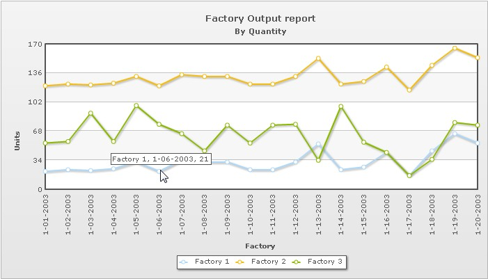

In this section, we will show you how to use FusionCharts XT and ASP to plot charts from data contained in a database. Here, we will do the following:
- Create a pie chart to show "Production by Factory" by using the Data String method first
- Convert the chart to use the data URL method
- Create a multi-series line chart from database
For the sake of ease, we will use an Access Database. The database is present in Download Package > Code > ASP > DB folder. You can, however, use any database with FusionCharts XT including MS SQL, Oracle, MySQL, etc.
Before you go further with this page, we recommend you to please see the previous section, Basic Examples, as we start off from concepts explained in that page.
The code examples contained in this page are present in Download Package > Code > ASP > DBExample folder. The Access database is present in Download Package > Code > ASP > DB.
Database Structure
Before we code the ASP pages to retrieve data, let's quickly have a look at the database structure.

The database contains just two tables:
- Factory_Master: To store the name and id of each factory
- Factory_Output: To store the number of units produced by each factory for a given date
For demonstration, we have fed some dummy data in the database. Let's now shift our attention to the ASP page that will interact with the database, fetch data and then render a chart.
The ASP page for Data String method example is named as BasicDBExample.asp (in the DBExample folder). It contains the following code:
<%@ Language=VBScript %>
<HTML>
<HEAD>
<TITLE>FusionCharts XT - Database Example</TITLE>
<SCRIPT LANGUAGE="Javascript" SRC="../../FusionCharts/FusionCharts.js"></SCRIPT>
</HEAD>
<!-- #INCLUDE FILE="../Includes/FusionCharts.asp" -->
<!-- #INCLUDE FILE="../Includes/DBConn.asp" -->
<BODY>
<CENTER>
<%
'In this example, we show how to connect FusionCharts to a database.
'For the sake of ease, we've used an Access database which is present in
'../DB/FactoryDB.mdb. It just contains two tables, which are linked to each other.
'Database Objects - Initialization
Dim oRs, oRs2, strQuery
'strXML will be used to store the entire XML document generated
Dim strXML
'Create the recordset to retrieve data
Set oRs = Server.CreateObject("ADODB.Recordset")
'Generate the chart element
strXML = "<chart caption='Factory Output report' subCaption='By Quantity' pieSliceDepth='30' showBorder='1'
formatNumberScale='0' numberSuffix=' Units'>"
'Iterate through each factory
strQuery = "select * from Factory_Master"
Set oRs = oConn.Execute(strQuery)
While Not oRs.Eof
'Now create second recordset to get details for this factory
Set oRs2 = Server.CreateObject("ADODB.Recordset")
strQuery = "select sum(Quantity) as TotOutput from Factory_Output where FactoryId=" & ors("FactoryId")
Set oRs2 = oConn.Execute(strQuery)
'Generate <set label='..' value='..'/>
strXML = strXML & "<set label='" & ors("FactoryName") & "' value='" & ors2("TotOutput") & "' />"
'Close recordset
Set oRs2 = Nothing
Rs.MoveNext
Wend
'Finally, close <chart> element
strXML = strXML & "</chart>"
Set oRs = nothing
'Create the chart - Pie 3D Chart with data from strXML
Call renderChart("../../FusionCharts/Pie3D.swf", "", strXML, "FactorySum", 600, 300, false, false)
%>
</BODY>
</HTML>The following actions are taking place in this code:
- We first include FusionCharts.js JavaScript class and FusionCharts.asp, to enable easy embedding of FusionCharts XT.
- We then include DBConn.asp, which contains connection parameters to connect to the Access database.
- Thereafter, we generate the XML data document by iterating through the recordset and store it in the strXML variable.
- Finally, we render the chart using the renderChart() method and pass strXML as Data String.
When you now run the code, you will get an output as under:

Converting the example to use the Data URL method
Let's now convert this example to use the Data URL method. As previously explained, in the Data URL mode, you need two pages:
- Chart Container Page - The page which embeds the HTML code to render the chart. This page also tells the chart where to load the data from. We will name this page as Default.asp.
- Data Provider Page - This page provides the XML data to the chart. We will name this page as PieData.asp
The pages in this example are contained in Download Package > Code > ASP > DB_dataURL folder.
Chart Container Page - Default.asp
Default.asp contains the following code to render the chart:
<%@ Language=VBScript %>
<HTML>
<HEAD>
<TITLE>FusionCharts XT - Data URL and Database Example</TITLE>
<SCRIPT LANGUAGE="Javascript" SRC="../../FusionCharts/FusionCharts.js"></SCRIPT>
</HEAD>
<!-- #INCLUDE FILE="../Includes/FusionCharts.asp" -->
<BODY>
<%
'In this example, we show how to connect FusionCharts to a database
'using Data URL method. In our previous example, we've used Data String method
'where the XML is generated in the same page as chart. Here, the XML data
'for the chart will be generated in PieData.asp.
'To illustrate how to pass additional data as querystring to dataURL,
'we've added an animate property, which will be passed to PieData.asp.
'PieData.asp will handle this animate property and then generate the
'XML accordingly.
'For the sake of ease, we've used an Access database which is present in
'../DB/FactoryDB.mdb. It just contains two tables, which are linked to each
'other.
'Variable to contain dataURL
Dim strDataURL
'Set DataURL with animation property to 1
'NOTE: It's necessary to encode the dataURL if you've added parameters to it
strDataURL = encodeDataURL("PieData.asp?animate=1")
'Create the chart - Pie 3D Chart with dataURL as strDataURL
Call renderChart("../../FusionCharts/Pie3D.swf", strDataURL, "", "FactorySum", 600, 300, false, false)
%>
</BODY>
</HTML>In the above code, we are:
- Including FusionCharts.js JavaScript class, and FusionCharts.asp
- Create the dataURL string and store it in the strDataURL variable. We append a dummy property- animate to show how to pass parameters to dataURL. After building the dataURL, we encode it using the encodeDataURL function defined in FusionCharts.asp.
- Finally, we render the chart using the renderChart() method and set dataURL as strDataURL.
Creating the data provider page PieData.asp
PieData.asp contains the following code to output XML Data:
<%@ Language=VBScript %>
<!-- #INCLUDE FILE="../Includes/DBConn.asp" -->
<%
'This page generates the XML data for the Pie Chart contained in
'Default.asp.
'For the sake of ease, we've used an Access database which is present in
'../DB/FactoryDB.mdb. It just contains two tables, which are linked to each
'other.
'Database Objects - Initialization
Dim oRs, oRs2, strQuery
'strXML will be used to store the entire XML document generated
Dim strXML
'Default.asp has passed us a property animate. We request that.
Dim animateChart
animateChart = Request.QueryString("animate")
'Set default value of 1
if animateChart="" then
animateChart = "1"
end if
'Create the recordset to retrieve data
Set oRs = Server.CreateObject("ADODB.Recordset")
'Generate the chart element
strXML = "<chart caption='Factory Output report' subCaption='By Quantity' pieSliceDepth='30'
showBorder='1' formatNumberScale='0' numberSuffix=' Units' animation=' " & animateChart & "'>"
'Iterate through each factory
strQuery = "select * from Factory_Master"
Set oRs = oConn.Execute(strQuery)
While Not oRs.Eof
'Now create second recordset to get details for this factory
Set oRs2 = Server.CreateObject("ADODB.Recordset")
strQuery = "select sum(Quantity) as TotOutput from Factory_Output where FactoryId=" & ors("FactoryId")
Set oRs2 = oConn.Execute(strQuery)
'Generate <set label='..' value='..' />
strXML = strXML & "<set label='" & ors("FactoryName") & "' value='" & ors2("TotOutput") & "' />"
'Close recordset
Set oRs2 = Nothing
oRs.MoveNext
Wend
'Finally, close <chart> element
strXML = strXML & "</chart>"
Set oRs = nothing
'Set Proper output content-type
Response.ContentType = "text/xml"
'Just write out the XML data
'NOTE THAT THIS PAGE DOESN'T CONTAIN ANY HTML TAG, WHATSOEVER
Response.Write(strXML)
%>
In the above page:
- We first request the animate property which has been passed to it (from dataURL)
- We generate the data and store it in the strXML variable
- Finally, we write this data to output stream without any HTML tags.
When you view this page, you will get the same output as before.
Let's now see how we can create a multi-series chart from database. This is no different from creating the Pie chart we saw above.
All you need to do is to build proper XML from the database that you query from your database. Multi-series charts have a different data format from the format of an XML for a single-series chart like pie. Let us see how the code will look for this:
<%
'In this example, we show how to connect FusionCharts to a database.
'For the sake of ease, we've used an Access databases containing two
'tables.
Dim resultCategories, resultData, strQuery
'strXML will be used to store the entire XML document generated
Dim strXML, intCounter
intCounter = 0
'Creating ADODB object.
Set resultCategories = Server.CreateObject("ADODB.Recordset")
'SQL query for category labels
strQueryCategories = "select distinct Format(Factory_Output.DatePro,'mm-dd-yyyy') as DatePro from Factory_Output "
'Connect to the DB and Query database
strQueryData = "select Factory_Master.FactoryName, Format(Factory_Output.DatePro,'mm-dd-yyyy') as DatePro,
Factory_Output.Quantity from Factory_Master Factory_Master,
Factory_Output Factory_Output where Factory_Output.FactoryID
= Factory_Master.FactoryId order by Factory_Output.FactoryID,
Factory_Output.DatePro"
'Query database
Set resultData = oConn.Execute(strQueryData)
'strXML will be used to store the entire XML document generated
'Generate the chart element
strXML = "<chart legendPosition='' caption='Factory Output report' subCaption='By Quantity'
xAxisName='Factory' yAxisName='Units' showValues='0' formatNumberScale='0' rotateValues='1' >"
'Build category XML
strXML = strXML & buildCategories(resultCategories, "DatePro")
'Build datasets XML
strXML = strXML & buildDatasets ( resultData, "Quantity", "FactoryName")
'Finally, close <chart> element
strXML = strXML & "</chart>"
'Create the chart - Pie 3D Chart with data from strXML
Call renderChart("../../FusionCharts/MSLine.swf", "", strXML,
"FactorySum", 700, 400, false, false)
'Free database resource
Set resultCategories = Nothing
Set resultData = Nothing
'***********************************************************************************************
' * Function to build XML for categories
' * @param result Database resource
' * @param labelField Field name as String that contains value for chart category labels
' *
' * @return categories XML node
' ***********************************************************************************************
Function buildCategories ( result, labelField )
Dim sXML
sXML = ""
If Not result Is Nothing Then
sXML = "<categories>"
While Not result.Eof
sXML = sXML & "<category label='" & result("DatePro") & "'/>"
result.MoveNext
Wend
sXML = sXML & "</categories>"
End If
buildCategories = sXML
End Function
'***********************************************************************************************
' * Function to build XML for datasets that will contain chart data
' * @param result Database resource. The data should come ordered by a control break
' field which will require to identify datasets and set its value to
' dataset's series name
' * @param valueField Field name as String that contains value for chart dataplots
' * @param controlBreak Field name as String that contains value for chart dataplots
' *
' * @return Dataset XML node
' ***********************************************************************************************
Function buildDatasets (result, valueField, controlBreak )
Dim sXML
sXML = ""
If Not result Is Nothing Then
controlBreakValue =""
While Not result.Eof
If ( controlBreakValue <> result(controlBreak) ) Then
controlBreakValue = result(controlBreak)
If Trim(sXML) = "" Then
sXML = sXML & "" & "<dataset seriesName='" & controlBreakValue & "'>"
Else
sXML = sXML & "</dataset>" & "<dataset seriesName='" & controlBreakValue & "'>"
End If
End If
sXML = sXML & "<set value='" & result(valueField) & "'/>"
result.MoveNext
Wend
sXML = sXML & "</dataset>"
End If
buildDatasets = sXML
End Function
Set resultCategories = oConn.Execute(strQueryCategories)
%>In the code above, we perform the following actions:
- Include FusionCharts.js JavaScript class and FusionCharts.asp and DBConn.asp
- Query database for all distinct dates to add them as categories labels of the chart. This is handled by the buildCategories function
- Query database for all factory-wise and dates-wise output data to add them to chart (using the buildDatasets function) data where data for each factory becomes a dataset
- Finally, render the chart using the renderChart() method and pass strXML as dataStr.
The chart will look as shown in the image below:
